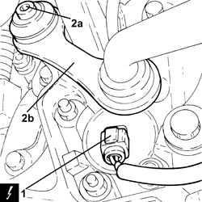
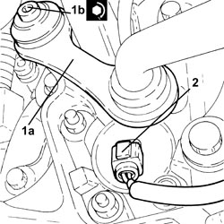

4420C12 REAR SUSPENSION STABILIZER BAR JOINT - R+R ON VEHICLE
- Path
- Procedures > 44 SUSPENSION AND WHEELS > 4420 REAR SUSPENSION > 4420C REAR SUSPENSION STABILIZER BAR/LINKS > 4420C12 REAR SUSPENSION STABILIZER BAR JOINT - R+R ON VEHICLE
- Kind
- repair procedure (removal / refitting; the operation number is the code)
- Applies to
- all engines; all production periods
- Interactive page
- https://sloeber94.github.io/elrnDB-fCrm/en/#/194000559
Applies to: all engines; all production periods
 Removing
Removing
 Refitting
Refitting- Position the vehicle on a lift.
- Make sure that the ignition key is in the OFF position, then disconnect the battery terminal (-).
Description | Connector | |
|---|---|---|
- | Battery |
Op. 4450B06 LEFT REAR WHEEL - R.R
1. Disconnect the electrical connection from the left rear wheel rpm sensor.
Description | Connector | |
|---|---|---|
1 | Left rear wheel sensor for ABS |
2. Undo the bolt (2a) and remove the left rear suspension anti-roll bar joint (2b).

Applies to: all engines; all production periods
Refitting
Removing1. Place the left rear suspension anti-roll bar joint (1a) in its housing and secure it by tightening the new bolt (1b) to the recommended torque.
Component | Fastening | dia | Value (daNm) | Validity |
|---|---|---|---|---|
Rear suspension anti-roll bar joint | Bolt (to be replaced) | M10 | (steering knuckle side) 4.1 - 5.0 + 60° |
2. Connect the electrical connection to the left rear wheel rpm sensor.

Applies to: all engines; all production periods
Op. 4450B06 LEFT REAR WHEEL - R.R
- Connect the negative battery terminal.
- Remove the vehicle from the lift.